我是吳昌遠，大同大學工業設計系學生。
我做設計的習慣是先大量找案例，再把問題拆到最底層：這個材料和成型方式為什麼這樣選、使用者卡在哪一步。卡住的時候，我會回頭去看最原本的痛點。
除了產品設計，我也用 AI 工具（Claude Code、Gemini）寫程式、架這個作品集網站，也做一些自動化的工作流程。我想把產品的外觀和機構設計，跟前端開發接起來。目標是成為獨立設計師，把自己的產品做到能上募資平台。
大同大學工業設計學系。高中就讀苑裡高中美術班。
六個專案：一個空間設計、三個產品設計、兩個平面設計。
城市裡缺一個可以短暫停下來的地方。夢網是一個多功能的休憩站，分成四個區：一個人休息、跟人聊天、看書、看窗外發呆。材質選木頭、霧面布料和石材，是為了讓空間安靜下來。
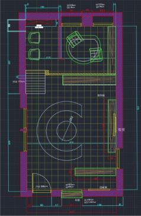
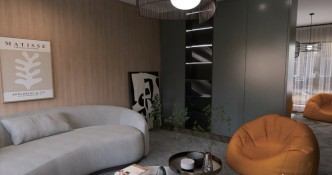
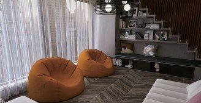
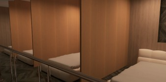
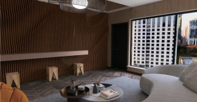
電風扇關掉的時候，就只是桌上一台礙眼的機器。我想做一個不轉的時候也值得擺著的東西。
這個作品跟老師討論了三次，每次都改掉一個地方：
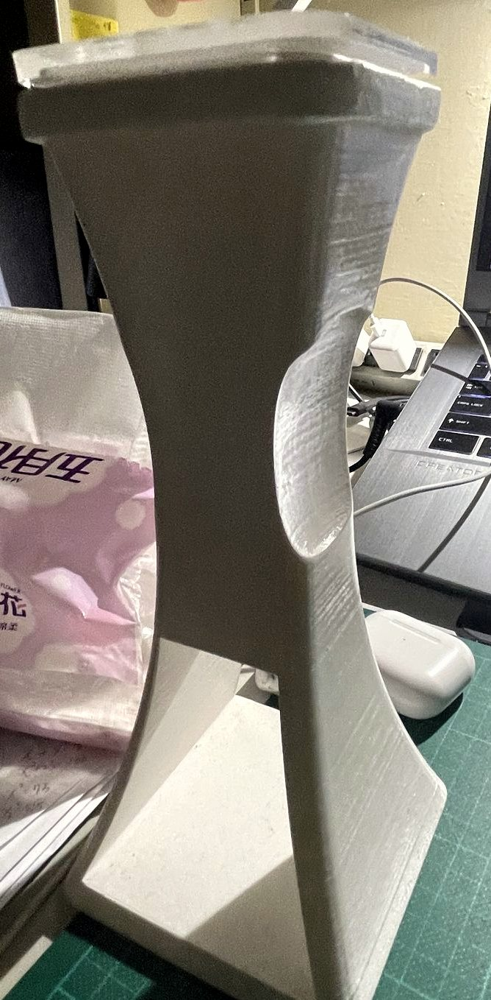
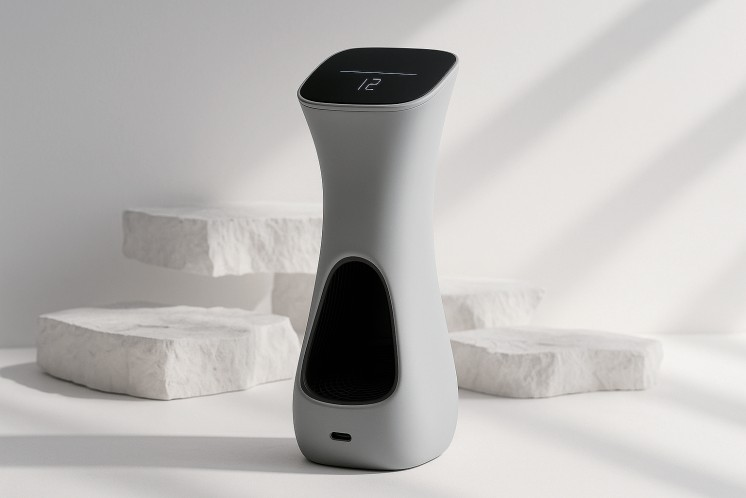
先用離心力分離，再經過濾網過濾。
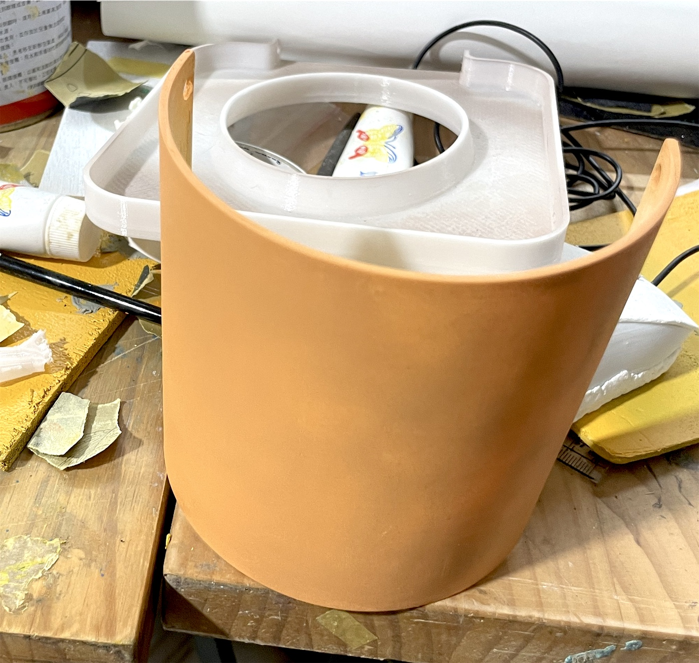
這是從我自己的桌面開始的。一般的增高架直接壓在桌上，又會多吃掉一塊空間。
所以我改用夾具固定在桌緣，不用鑽孔。插孔集中在架子底部，前緣加一條燈帶，晚上也找得到插孔。機身用陽極氧化鋁加霧黑處理，比較不會留指紋。
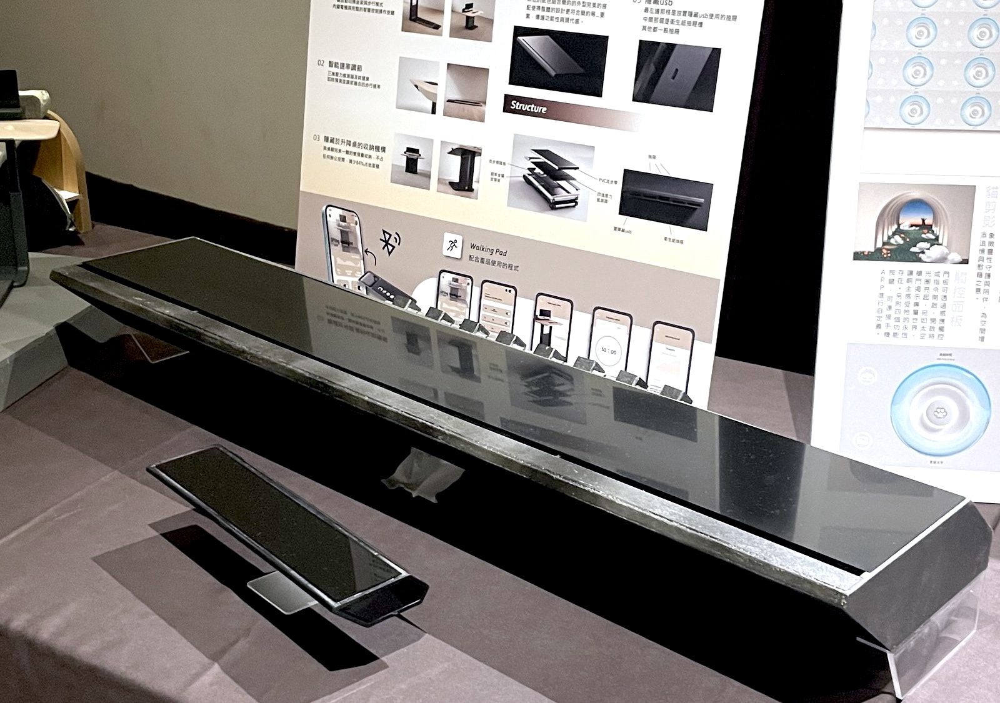
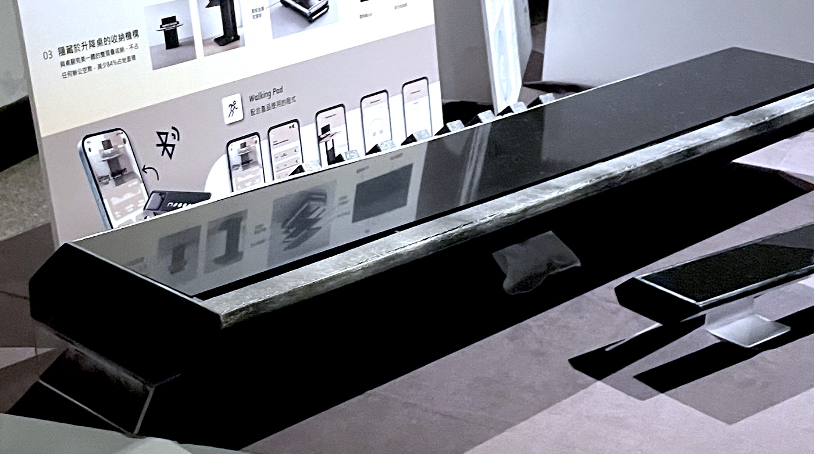
2024 年系學會的主視覺。吉祥物是一群水滴，每一顆的表情都不同，代表系上不同的人。顏色用藍綠漸層加一點深藍和紫灰，字體用無襯線加動態排版。
主視覺定案後，我把水滴延伸到貼紙、海報和社群圖。貼紙後來被貼在大家的筆電和手機殼上。
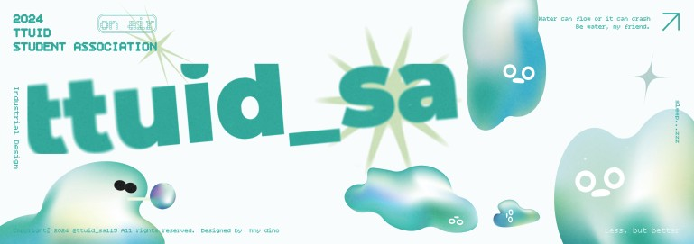
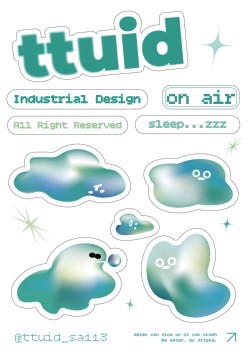
2024 年 9/9–9/13 的學生二手工具市集。二手工具交換本來就沒什麼規則，所以視覺也故意做得亂：深藍黑底、螢光綠和桃紅、拼貼加手繪。系學會的水滴吉祥物在這裡變成擺攤的角色。
同一套主視覺拆成不同的比例，給各種版位使用。
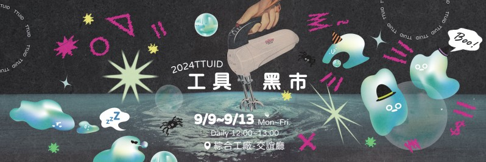
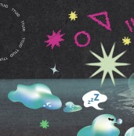
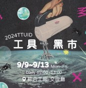
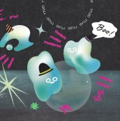
這本作品集裡有做得比較完整的，也有還在修的。對哪個專案有疑問都歡迎直接問我，我可以打開原始檔，跟你講當時是怎麼想的。